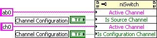
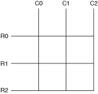
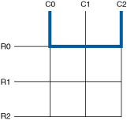
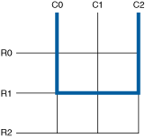
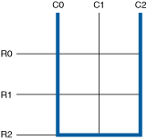

您可以使用 NI-SWITCH 设置通道类型。将通道设置为源通道，以提供额外的软件保护，防止对您的系统造成意外损坏。将通道设置为配置通道，完成交换机架构支持但软件不支持的连接。
|
注 ：当您使用即时VI/函数或扫描VI/函数时，源通道类型提供额外的软件保护，但当您直接使用niSwitch Relay Control VI或niSwitch_RelayControl函数操作继电器时，它不提供额外的保护。NI 不建议组合这些类型的 VI/函数调用。 |
要编辑通道类型，请使用niSwitch 属性节点或niSwitch_SetAttribute函数之一。
下图表示 niSwitch 属性节点中的一个源通道（ab0）和一个配置通道（ch0）。

设置源通道以向驱动程序指示信号源已连接到该通道。NI-SWITCH 不允许直接或间接连接两个用户定义的源通道。
|
注意带有C 型继电器的 开关模块在公共 (COM) 和常开 (NO) 或常闭 (NC) 通道之间始终存在物理连接。NI-SWITCH 可能不会在所有情况下都反映该连接，并且可能会创建危险或不需要的连接。例如，如果您调用将 COM 通道连接到 NO 或 NC 通道，NI-SWITCH 会验证没有源冲突。但是，niSwitch Disconnect Channels VI 或niSwitch_Disconnect函数或niSwitch Disconnect All Channels VI 或niSwitch_DisconnectAll函数等操作可能会创建未反映在软件中的连接。 |
设置配置通道以允许 NI-SWITCH 使用该通道来创建内部路径。如果未将行通道设置为配置通道，则在矩阵中创建列到列连接将失败。
|
注意 配置通道在其他交换机 API 中也可能被称为“保留用于路由”。 |
参考下图中的矩阵，完成以下步骤，创建连接 C0 和 C2 的路由。

下图分别代表您可以使用 R0、R1 和 R2 作为配置通道创建的路由。



 提交有关此主题的反馈。
提交有关此主题的反馈。 访问ni.com/support以获得技术支持。
访问ni.com/support以获得技术支持。